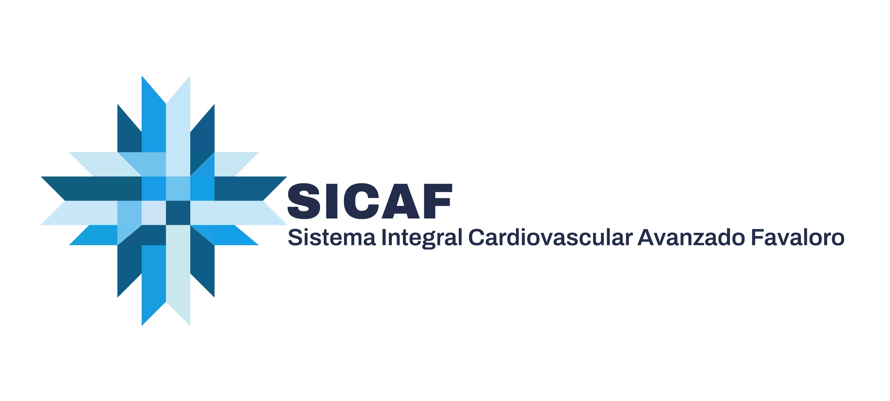

El paciente
El paciente
ES UNA PERSONA,
no un corazón aislado.
Un sistema que permite a los médicos cardiológicos enfocarse en lo que más importa: sus pacientes, unificando procesos y simplificando la gestión.